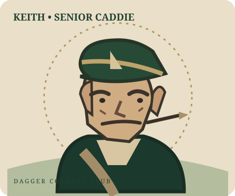

On the bag: Keith · Private-club service. Municipal-course language.
Keith is here to help you shoot lower scores and make slightly fewer stupid decisions.
Welcome to Dagger Caddie
Before Keith starts judging your choices, pick how you want to start.
Use starter profile
Loads the existing range-session distances so you can try the app instantly.
Build my own bag
Start with an empty bag and enter your carry distances manually.
Upload range data
Import a launch-monitor CSV and let Keith build your profile from actual shots.
CADDIE MASTER'S OFFICE
DAGGER COUNTRY CLUB · PERSONNEL DIVISION
KEITH · HEAD CADDIE
Known for
Specialty
Club warning
Round mode
Fast inputs for the course. Big buttons. No dissertations.
Keith Mode
READY, WHEN YOU ARE
Enter yardage · Ask Keith
Keith has the bag. He just needs a number.
Keith says: Nice and easy. No need to turn a stock 7-iron into a federal case.
DAGGER COUNTRY CLUB
PUCKER FACTOR
— / 10
Awaiting shot
Keith needs your yardage and lie first.
Voice optional; manual controls always work.
Wind, pin, danger & notes ＋
Club confidence: —Safe miss: unknownKeith: unimpressed
Keith’s field intelligence · club battle · carry test
Club Battle
Ask Keith to compare two clubs.
Estimates only. Choose the safe miss for this hole.
Tell me the carry, not the distance to the flag.
Keith’s memory
Log shots to build evidence.
Optional: one tap records the last shot outcome on this phone. No scorekeeping.
Recommendations are only as good as your yardage, lie, carry requirement, and hazard info. Keith is sarcastic, not psychic.
DAGGER COUNTRY CLUB · MENTAL PERFORMANCE DEPARTMENT
Keith’s Emergency Services
Because apparently we need this. No lectures, no swing rebuilding.
10 SECOND RESET

Keith, Head of Emotional Damage Control
“You’re allowed one bad swing. A full psychological collapse is extra.”
THE LAST SHOT IS DEAD
The last shot is dead. Stop digging it up.
What’s happening?
1. Exhale slowly for 6 seconds. 2. Loosen your hands and shoulders. 3. Pick one safe target and commit.
“That shot is dead. We’re not holding a fucking memorial service.”
Take the breath before pressing the button.
Keith roasts the decision, not you. A reset is for recovering composure, not forcing a hero shot.
Quick wedges
Make short-game calls way more useful. Enter your reliable carry for these stock feels.
Optional, but extremely useful for actual scoring golf.
Keith's Yardage Book
Save course-and-hole notes. No pretending Keith knows a hazard you haven't entered.
Saved locally on this phone.
Course & GPS
GPS gives straight-line distance to your saved green center. It does not know the flag, bunker lip, or whether you just short-sided yourself like a maniac.
Keith's personality
Personality changes Keith's delivery, not the shot decision.
Member's bag
Enter your normal carry distance. Manual yardages take priority over range-session averages.
Add a club not listed
Your changes are saved on this device.
Your current distances
Club
Carry
Source
Update your range data
Starting profile: October 16, 2026 · 60 shots.
Keith's notebook
No results logged yet.
Profile summary
Club
Carry
Shots
Avg offline
Range files are parsed on this device. Back up after importing if you don't want Keith to forget everything.
Range-session trend
Import a new range CSV to start your session history. Existing averages do not contain past individual-session data.
Session
Swings
Clubs
DAGGER COUNTRY CLUB · WAGERING DESK
Betting
Simple match play. Hole-by-hole. Enough math to keep the money honest.
MATCH PLAY
Current hole1
MatchAll square
Net$0
Press levelClean
Keith will adjust his risk commentary using your logged match position. Wagers don’t change your bag distances.
Log each hole result and Keith will keep the running tally.